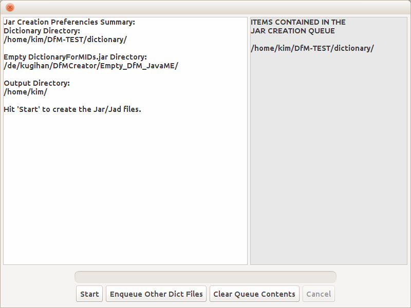

The JarCreator (GUI) Documentation
After generating the dictionary files in the DictionaryGeneration tab, you have to create a jar file
that you will install on your Java powered device (mobile phone, smartphone, PDA...). For that, you need JarCreator.
You can find the JarCreator tab just after the BitmapFontGenerator tab. JarCreator has 3 fields you have to fill in
correctly in order for it to take you to the jar creation preferences summary window. That window will enable you to go
on to the actual jar creation process. You have to provide:
- The path to the directory named dictionary that contains the dictionary files created by DictionaryGeneration
- The path to the empty DictionaryForMIDs.jar and DictionaryForMIDs.jad (must be free of any dictionary files).
Provide this paths only if you selected the check box "Choose Your Own Empty DictionaryForMIDs Jar-
Jad Files".
Indeed, DfM-Creator comes bundled with the latest stable empty DictionaryForMIDs.jar/jad files.
And they can be used to create your jar/jad files without your having to provide external ones.
- The path to the output directory (where the created jar/jad files will be saved to)
Peep the screen-shot below.
Launching the jar creation preferences summary window
Below is a screen-shot of the jar creation preferences summary window.
Hitting the Start button launches the jar creation process. The jar/jad files
that are created are put in a directory that has the same name as the dictionary
name and are located just under the output directory that you specified.

Creating the jar/jad files
Hitting the Start button launches the jar creation process.
If everything goes well, you should find the files DictionaryForMIDs_XXX_XXX.jar
and DictionaryForMIDs_XXX_XXX.jad in the directory DictionaryForMIDs_XXX_XXX.
This directory is created under the output directory you provided.
You can also:
- Enqueue Other Dict Files: add another dictionary along with its settings.
- Clear Queue Contents: remove all the information entered.
- Cancel: cancel the jar creation process (once it has been launched).